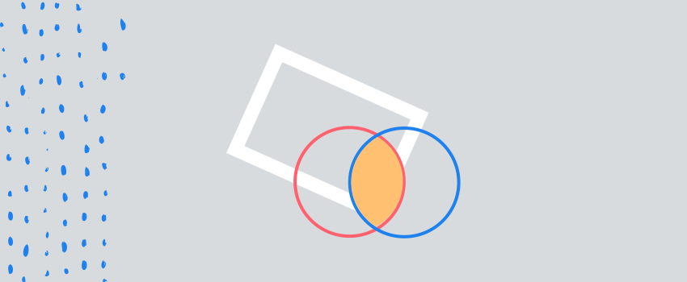

Empathy and creativity 3/10/2017
Empathy is a word initially used in the aesthetics philosophy. It designated the intuitive comprehension of a work of art. The last neuroscience researches have enriched our knowings and placed this phenomenon as the basis of human links and artistic communication.
Definition
Empathy is a very old concept (we find traces in the Confucius and Mencius disciplines of the IVth and IIIrd centuries B.C); the word empathy was created by the German philosopher Robert Vischer (it can be translated as Einfühlung, to feel in oneself). Initially used in the aesthetics philosophy works, this concept designated the intuitive comprehension of an artwork. It evolved after that towards the philosophy areas under the impulse of another German philosopher, Theodor Lipps. The word would be translated then as «empathy» by the English and American authors.
Empathy is the capacity that we have to connect with others and with artworks. It makes us able to read the emotions contained in them.
The researches on the biological origins of empathy are recent, but very promising. Empathy — as the capacity to feel the same emotion as other people just with looking at them - seems to be the work of mirror neurons. These neurons are indistinctly activated during the action of observing how another person acts. They send pertinent nervous message and allow - in a certain way — to experience what is observed in the other as if it was being experienced by oneself.
Empathy and neurobiology
At the beginning of the 90’s neurobiologist Giacomo Rizzolatti discovered that the brain mechanisms in charge of the movements of a macaque ape had the same working process while eating as while watching someone (a human being, for instance) executing the same action. Rizzolatti named them «mirror neurons». The understanding of the expression of another person is spontaneous and it doesn’t involve language. It’s linked to a neuronal organization of the brain. Which gives Art a considerable expression power.
Empathy and Work of Art
The effect of empathy on Art has been already scientifically proven. David Friedberg (Art teacher) and Vittorio Gallese (researcher in neuroscience) published an article in 2007: «movement, emotion and empathy in the artistic experience». They observed the actions of specific brain areas during the process of watching an artwork. In this way, while watching an abstract painting we unconsciously draw what the artist has painted on the canvas. The link is more obvious when we connect the feelings of a character through the expression of his face.
The audience of a Jackson Pollock’s abstract painting feel that they participate with the movement of their bodies in the paint marks on the painting. Whether it is in the marks or in the colors used in the painting, these movements are suggested by the material marks of the artist that created it. The link with the organic side of the painting is obvious. Is this connection innate or is it built after learning how to read the painting? Could we feel the same if this abstract work was a digital printing, without any human trace?
Share
We project our own emotions over the artworks we watch. Creation is a sharing process, oneself offering the audience to feel. Artists as well as the observers re-read the world, stopping in its beautifulness and its singularity. Artists have the power of focusing and sharing those things that we all have already felt for a moment, intuitively, without noticing it.
The first step belongs, then, to the author, with the objective of being able to tell the audience of his work «stop, observe and vibe with me». The audience must therefore re-learn how to observe, focusing on what the artist wants to communicate and feel.
Discover mēkā
meka is a chat bot using artificial intelligence to help train and develop your creativity.
test my creativity